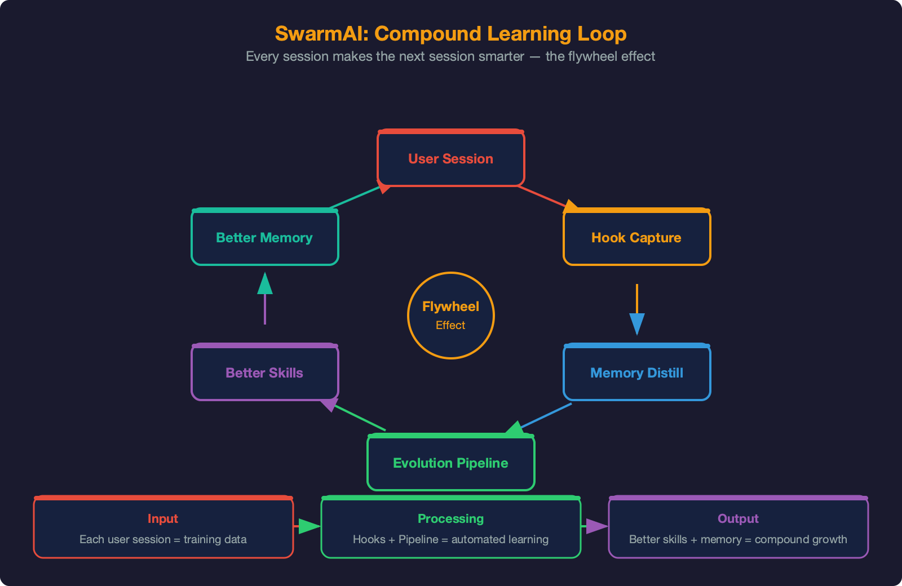

Harness Engineering: How a Stateless LLM Becomes
a Persistent, Evolving Agent
Version: 2.1 • Date: April 10, 2026
Author: REDACTED_NAME (XG) + Swarm (AI Co-Architect)
Status: For PE / Tech Leadership Review • Classification: Internal
SwarmAI is a desktop application that wraps Claude's Agent SDK inside a harness — a structured layer of context management, persistent memory, self-evolution, and safety controls that transforms a stateless large language model into a persistent, evolving personal AI agent.
The core thesis: most AI tools reset when you close them. Context is lost, decisions are forgotten, and users re-explain the same things session after session. SwarmAI solves this structurally — not through fine-tuning, but through engineered knowledge persistence.
| Metric | Value |
|---|---|
| Commits | 723+ |
| Built-in Skills | 56+ (curated + self-built) |
| Context Files | 11 (P0–P10 priority chain) |
| Post-Session Hooks | 7 (auto-commit, DailyActivity, distillation, evolution ×2, context-health, improvement) |
| Pipeline Stages | 8 (EVALUATE → REFLECT) |
| Session States | 5 (COLD → STREAMING → IDLE → WAITING_INPUT → DEAD) |
| Core Engine Level | L4 (Autonomous) — 12-module self-evolution loop closed + DDD refresh + hybrid recall |
| Backend Mode | Daemon-first (launchd 24/7) — desktop app is optional UI layer |
| OOM Protection | Proactive RSS restart at 1.2GB — prevents jetsam kills |
| Memory Recall | Hybrid: FTS5 keyword + sqlite-vec vector (Bedrock Titan v2, 1024-dim) |
| Channels | Desktop + Slack (unified brain) |
| Tech Stack | 4 languages: Rust (Tauri), TypeScript (React), Python (FastAPI), SQL (SQLite) |
SwarmAI's architecture is organized into six horizontal layers. Each layer has a clear responsibility boundary. The Harness layer (Layer 3) is the core innovation — it is what differentiates SwarmAI from a simple LLM wrapper.
Figure 1: SwarmAI Agentic OS Architecture — Six-layer design with the Harness as the core innovation
| Layer | What It Does | Key Components |
|---|---|---|
| Interface | Visual workspace, multi-tab chat, dashboard, channels | SwarmWS Explorer, Chat (1–4 tabs), Radar, Gateway (Slack) |
| Intelligence | Proactive awareness, autonomous execution, jobs | Proactive Intelligence, Signal Pipeline, Autonomous Pipeline, Job System |
| Harness | Core: raw Claude → persistent, evolving agent | Context (11 files), Memory (3-layer + hybrid recall), Evolution (56+ skills), Safety |
| Session | Multi-session lifecycle, isolation, recovery | SessionRouter, SessionUnit (5-state), LifecycleManager, 7 Hooks |
| Engine | AI model access, tool ecosystem | Claude Agent SDK, Bedrock/Anthropic, MCP Servers (7+), Skills Engine |
| Platform | Desktop infra, all local, zero cloud | Tauri 2.0, React 19, FastAPI, SQLite, filesystem, launchd daemon (24/7) |
The defining characteristic is the compound loop — a feedback cycle where every session's output becomes the next session's input:

Figure: SwarmAI Compound Learning Loop — every session makes the next session smarter
The Swarm Core Engine is the meta-architecture that ties all six flywheels together. Each flywheel feeds the others: memory informs context, context improves sessions, sessions trigger evolution, evolution builds skills, skills improve memory capture — compound growth with every interaction.
Figure 2: Swarm Core Engine — Six interconnected flywheels and growth trajectory (L4 Autonomous — current)
| Flywheel | What It Does | Key Components |
|---|---|---|
| Self-Evolution | Observes user patterns, measures skill performance, auto-optimizes underperformers, never repeats mistakes | EVOLUTION.md, 56+ skills, SkillMetrics, EvolutionOptimizer, SessionMiner, SkillFitness, UserObserver, SkillGuard |
| Self-Memory | 3-layer distillation + hybrid recall, SessionRecall (FTS5 cross-session), MemoryGuard (all writes sanitized), git-verified, weekly LLM pruning | DailyActivity, distillation, MEMORY.md, SessionRecall, MemoryGuard, briefing, sqlite-vec |
| Self-Context | 11-file P0-P10 priority chain + token budgets + caching | Context loader, prompt builder, budget tiers, freshness |
| Self-Harness | Validates context files, detects DDD staleness, auto-refresh | ContextHealthHook (light+deep), auto-commit, integrity |
| Self-Health | Monitors services, resources, sessions; proactive restart, auto-restart | Service manager, resource monitor, lifecycle manager, OOM governance |
| Self-Jobs | Background automation, scheduled tasks, signal pipeline | Job scheduler, service manager, signal fetch/digest |
| Level | State | Capabilities | Status |
|---|---|---|---|
| L0 | Reactive | Responds to questions, no memory | Complete |
| L1 | Self-Maintaining | Remembers, self-commits, captures corrections, health monitoring | Complete |
| L2 | Self-Improving | Weekly LLM maintenance, unified jobs, feedback loops closed | Complete |
| L3 | Self-Governing | Session-type context, proactive gap detection, DDD auto-sync | Complete |
| L4 | Autonomous | Next-Gen Agent Intelligence: 12-module self-evolution loop closed. UserObserver → SkillMetrics → SessionMiner → EvolutionOptimizer → auto-deploy with backup. Plus DDD refresh, skill proposer, hybrid recall, MemoryGuard, proactive OOM restart. | Current (4/6 + 2 new) |
The Harness is what makes SwarmAI more than a ChatGPT wrapper. It is a structured engineering layer between the user interface and the raw LLM that provides four critical capabilities: context continuity, memory persistence, self-improvement, and safety.
Most AI tools assemble a single system prompt. SwarmAI maintains an 11-file priority chain (P0–P10) that is assembled, cached, and budget-managed through a multi-stage pipeline. This is the most token-intensive subsystem and the one with the highest impact on agent quality.
Figure 3: Context Engineering — 11-file priority chain with token budget management and L0/L1 caching
| P | File | Owner | Truncation | Purpose |
|---|---|---|---|---|
| P0 | SWARMAI.md | System | Never | Core identity & principles |
| P1 | IDENTITY.md | System | Never | Agent name, avatar, intro |
| P2 | SOUL.md | System | Never | Personality & tone |
| P3 | AGENT.md | System | Truncatable | Behavioral directives |
| P4 | USER.md | User | Truncatable | User preferences & background |
| P5 | STEERING.md | User | Truncatable | Session-level overrides |
| P6 | TOOLS.md | User | Truncatable | Tool & environment config |
| P7 | MEMORY.md | Agent | Head-trimmed | Persistent memory (newest kept) |
| P8 | EVOLUTION.md | Agent | Head-trimmed | Self-evolution registry |
| P9 | KNOWLEDGE.md | Auto | Truncatable | Domain knowledge index |
| P10 | PROJECTS.md | Auto | Lowest | Active projects index |
The memory pipeline is now a two-part system: a distillation pipeline that converts raw session activity into durable, curated knowledge, and a recall system that ensures any memory entry — regardless of age — can be found when relevant.
Figure 4: Memory Pipeline — Three-layer distillation + hybrid recall system with vector embeddings
| Layer | Storage | Lifecycle | Content |
|---|---|---|---|
| 1. Capture | DailyActivity/YYYY-MM-DD.md | 30 days → archived | Per-session: deliverables, git commits, decisions, lessons, next steps |
| 2. Distillation | Triggered when ≥3 files | At session start (silent) | Recurring themes promoted; noise filtered; claims verified against git log |
| 3. Curated | MEMORY.md | Permanent (weekly maint.) | Open Threads (P0/P1/P2), Key Decisions, Lessons, COE Registry |
| Layer | What | How | When |
|---|---|---|---|
| L0: Memory Index | Compact ~500-token index of ALL memory entries | Value-based tiers (Permanent/Active), keyword aliases, stable keys [RC14], [KD08] | Always injected into system prompt |
| L1: Section Selection | Topic-triggered loading of 0-3 MEMORY.md sections | Keyword relevance matching against first user message, budget-capped | Only when MEMORY.md exceeds 30K tokens |
| L2: Hybrid Search | Semantic + keyword search over Knowledge Library | FTS5 keyword (0.4) + sqlite-vec vector (0.6), Bedrock Titan v2 embeddings (1024-dim) | Agent uses Read tool on demand |
Born from a real Sev-2 incident (COE C005): the distillation hook verifies all implementation claims against git log before promoting to MEMORY.md. Without this, mid-session snapshots captured before later commits create false memories that compound across sessions.
Self-evolution is a closed-loop system across 12 modules in 4 phases. The agent observes user behavior, measures skill performance, mines correction patterns from session transcripts, and automatically rewrites underperforming skills — all with safety gates and audit trails.
Figure 5: Next-Gen Agent Intelligence — 12 modules across 4 phases forming a closed observe-measure-mine-optimize loop
| Phase | Modules | Purpose |
|---|---|---|
| 1: Safety | MemoryGuard, SkillMetrics, SectionCaps, EntryRefs | Guard all MEMORY.md writes, measure skill performance, enforce memory size limits, cross-reference entries with 1-hop loading |
| 2: Understanding | UserObserver, SessionRecall, SkillRegistry, SkillGuard | Detect user patterns → USER.md suggestions, FTS5 cross-session search, compact skill index in prompts, trust-level security scanning |
| 3: Evolution | SessionMiner, SkillFitness, EvolutionOptimizer, RetentionPolicies | Mine transcripts for eval examples, 3-signal fitness scoring, correction-pattern rewriting with .bak backup + deploy + audit log |
| 4: E2E Hardening | 12 fixes across 13 files | MemoryGuard on all write paths, wire dead ends, singleton caches, word-boundary recall, 1-hop ref loading |
Triggered at session close (7-day cadence) + Thursday 04:00 UTC cron fallback:
SessionMiner.mine_all() → SkillMetrics.get_evolution_candidates() → SkillFitnessEvaluator.score_batch() → EvolutionOptimizer.optimize_skill() → deploy_optimization() (SKILL.md.bak + modified SKILL.md + EVOLUTION.md log)
| Category | Lifecycle | Examples |
|---|---|---|
| Capabilities Built | Active → archived if 0 usage for 30d | Browser agent, context monitor, workspace finder |
| Optimizations | Permanent | Use CDP over WebSocket for persistent browser sessions |
| Corrections | Permanent (NEVER deleted) | Reported features as 'not started' when fully shipped (C005) |
| Competence | Cross-referenced | SSE streaming pipeline, multi-session architecture |
| Failed Evolutions | Permanent | Approaches attempted and abandoned (with reasons) |
Next-Gen-Agent-Intelligence-Design-Doc.md.Safety is a structural property, not a feature. SwarmAI implements defense-in-depth through seven independent layers:
| Layer | Mechanism | Details |
|---|---|---|
| Tool Logger | Audit trail | Every tool invocation logged with timestamp, parameters, result |
| Command Blocker | Pattern matching | 13 dangerous patterns blocked (rm -rf, DROP TABLE, force push, etc.) |
| Permission Dialog | Human approval | First-time external actions require approval; approvals persist |
| Bash Sandbox | Claude SDK sandbox | Filesystem write restrictions, network allowlists, process isolation |
| Escalation Protocol | Confidence-gated | 3 levels: INFORM (act+tell), CONSULT (options+ask), BLOCK (stop+wait) |
| ContextHealthHook | Integrity validation | Light (every session): file existence/format. Deep (weekly): staleness |
| Decision Classification | Judgment framework | mechanical (auto), taste (batch), judgment (block for human) |
Swarm is a personal assistant with one brain. Regardless of channel — desktop or Slack — it is the same Swarm, same memory, same context. Adding a new channel: write an adapter (~250 lines), register in gateway, map user identity. Zero architecture change.
Figure 6: Swarm Brain — One AI, every channel, three layers of continuity
| Layer | Mechanism | Scope |
|---|---|---|
| L1: Shared Memory | 11 context files loaded at every prompt build | All sessions (tabs + channels) |
| L2: Cross-Channel Session | All channels share ONE Claude conversation (--resume) | Slack + future channels |
| L3: Active Session Digest | Sibling session summaries injected into prompts | Tabs ↔ Channels (bidirectional) |
Replaced a monolithic AgentManager (5,428 lines) with four focused components during the v7 re-architecture. Driven by real need: parallel chat tabs + dedicated channel slots without resource exhaustion.
Figure 7: Multi-Tab Parallel Sessions — SessionRouter, 5-state SessionUnits, dedicated channel slot
| Component | Responsibility |
|---|---|
| SessionRouter | Slot acquisition, IDLE eviction, queue timeout (60s), MAX_CONCURRENT=2 |
| SessionUnit | 5-state machine (COLD→STREAMING→IDLE→WAIT→DEAD), subprocess spawn, 3x retry with --resume, SSE |
| LifecycleManager | 60s health loop, 12hr TTL kill, DEAD→COLD cleanup, startup orphan reaper, proactive RSS restart |
| SessionRegistry | Module-level singletons, initialize() wires components, configure_hooks() |
--resume to restore conversation context across crashesThe Intelligence layer provides proactive awareness, autonomous execution, and background automation. While the Harness ensures the agent remembers and improves, this layer ensures it anticipates, acts, and automates.
Drives the full development lifecycle from a one-sentence requirement to PR-ready delivery. Implementation of AIDLC Phase 3 (AI-Management): AI makes autonomous decisions, humans step in when needed.
Figure 8: Autonomous Pipeline — 8-stage lifecycle with DDD+SDD+TDD methodology and safety mechanisms
| Stage | Output | Gate |
|---|---|---|
| EVALUATE | ROI score, GO/DEFER/REJECT | ROI ≥ 3.5 to proceed |
| THINK | 3 alternatives (Minimal/Ideal/Creative) | User picks approach |
| PLAN | Design doc (SDD) + acceptance criteria | Design approval |
| BUILD | Code + tests (TDD: RED → GREEN → VERIFY) | All tests pass |
| REVIEW | Code quality scan + security scan | No high-severity findings |
| TEST | Full suite, regression check | WTF Gate (halt if risky) |
| DELIVER | PR description, decision log, report | Taste decisions batched |
| REFLECT | Lessons → IMPROVEMENT.md | — |
Methodology Stack (DDD + SDD + TDD): DDD (4 project docs) provides autonomous judgment — "should we build this?". SDD (design doc with acceptance criteria) produces specs. TDD (tests before code) verifies delivery. Key insight: when no human reviews every line, the test suite IS the quality gate.
Background automation via macOS launchd — runs independently of chat sessions. The scheduler evaluates due jobs every hour, routes them to type-specific handlers via the executor, and persists state across restarts. The service manager handles long-running sidecars (Slack bot) with auto-restart and health monitoring.
Figure 9: Job System — launchd scheduler, executor routing, signal pipeline, and sidecar services
| Job Type | Handler | Examples | Token Cost |
|---|---|---|---|
| signal_fetch | httpx adapters (HN, RSS, GitHub) | 3x daily signal collection | Zero (no LLM) |
| signal_digest | Sonnet 4.6 relevance scoring | Daily digest, weekly rollup | ~2K tokens/run |
| agent | Headless Claude CLI + MCP | Morning inbox, custom tasks | Variable |
| script | Subprocess (deterministic) | self-tune, feed calibration | Zero (no LLM) |
| maintenance | Prune + cleanup + L4 proposals | Weekly cache cleanup, DDD refresh, skill proposer | ~$0.25/week |
1,142 lines, 106+ tests. Provides session-start briefings through five levels of analysis:
| Level | Capability | How |
|---|---|---|
| L0 | Parsing | Extract structured data from DailyActivity, MEMORY.md, open threads |
| L1 | Temporal awareness | Time-sensitive items, deadlines, recency weighting |
| L2 | Scoring engine | Priority × staleness × frequency × blocking × momentum per item |
| L3 | Cross-session learning | JSON-persisted: skip penalty for ignored, affinity bonus for accepted |
| L4 | Signal highlights | External intelligence (HN, RSS, GitHub) with effectiveness scoring |
The interface is a single integrated system where the Chat Center orchestrates everything. Three columns are views into one unified workspace connected by drag-to-chat context injection.
Figure 10: Three-Column Command Center — SwarmWS, Chat Center, Swarm Radar with drag-to-chat
| Column | Purpose | Key Interactions |
|---|---|---|
| SwarmWS Explorer (left) | Persistent local workspace | Git-tracked + ETag polling. Agent reads/writes/commits directly. |
| Chat Center (center) | Multi-session command surface | SSE streaming, per-tab isolation, 56+ skills, MCP tools. Controls Explorer and Radar. |
| Swarm Radar (right) | Attention dashboard | ToDos, sessions, artifacts, jobs. Drag work packets to chat for instant context. |
A fundamental architectural shift (March 30, 2026): Tauri now connects to a launchd-managed daemon instead of spawning a sidecar. The backend runs independently of the desktop app, enabling 24/7 operation for Slack, background jobs, and scheduled tasks.
| Step | What Happens | Detail |
|---|---|---|
| 1. App Launch | Tauri probes for running daemon | Retry 5×2s at discovered port via psutil |
| 2. No Daemon? | Auto-bootstrap via launchctl | launchctl bootstrap gui/<uid> com.swarmai.backend.plist |
| 3. Still No? | Fallback: spawn as sidecar | Legacy mode — same as v1.0, but rare |
| 4. App Closes | Daemon stays alive | Slack, jobs, signals continue 24/7 |
| 5. Crash Recovery | launchd auto-restarts | KeepAlive=true, max 3 retries, exit 37 for bootstrap conflict |
macOS jetsam kills processes that exceed memory pressure thresholds — with no warning, no cleanup, no resume. SwarmAI now proactively restarts sessions before jetsam acts, preserving conversation context.
Each Claude CLI subprocess + its MCP servers costs ~500MB RSS. Two active tabs = ~1GB. With context growth during long sessions, processes can reach 1.2-1.5GB, triggering jetsam exit code -9 kills. Previously: total data loss for that session.
| Component | What | Detail |
|---|---|---|
| Trigger B (primary) | Post-turn RSS check | After STREAMING → IDLE, check process tree RSS. If > 1.2GB: trigger restart. |
| Trigger A (fallback) | Lifecycle maintenance loop | Every 60s, check all IDLE sessions. Catches sessions that grew but received no new messages. |
| Restart Flow | Compact → kill → lazy resume | Trigger SDK compaction, kill subprocess, mark COLD. Next message auto-respawns with --resume. |
| Cooldown | 3-minute per-session cooldown | Prevents restart loops. OOM crash adds 30-120s backoff. |
| Auto-resume | _ensure_spawned always checks | If COLD + existing _sdk_session_id → auto-inject --resume. Covers ALL kill-then-respawn paths. |
total - available (matches macOS jetsam logic, NOT psutil.virtual_memory().used)| Decision | Choice | Alternative | Rationale |
|---|---|---|---|
| Memory | 3-layer distillation + hybrid recall (files + vector) | Pure RAG / Vector DB | Files are git-trackable, human-readable, editable. Vector adds semantic recall without replacing files. |
| Sessions | 4-component decomposition | Monolithic AgentManager | 5,428-line God Object caused 15+ bugs (COE). Clean error boundaries. |
| Context | 11-file priority chain + budget | Single system prompt | Priority truncation ensures identity/safety survive under pressure |
| Channels | Shared session (serialized) | Independent per channel | 'One brain': Slack knows what desktop said. No fragmentation. |
| Skills | SKILL.md instruction files | Compiled plugins | LLM-native: agent reads as natural language. New skill = markdown file. |
| Data | All local (SQLite + filesystem) | Cloud database | Zero cloud dependency. Privacy by default. Works offline. |
| Safety | Defense-in-depth (7 layers) | Single permission gate | No single layer sufficient. Redundant protection. |
| Jobs | macOS launchd daemon | In-process cron | Survives app restarts, runs when app is closed, managed by OS. |
| Backend | Daemon-first (launchd) | App-managed sidecar | 24/7 operation: Slack, jobs, signals run without desktop app. |
| OOM | Proactive RSS restart | Reactive crash recovery | Prevention > recovery. Jetsam kills lose all context; proactive restart preserves it. |
| Agents | Single-agent role-switching | Multi-agent orchestration | Zero context transfer cost. Multi-agent coordination is a tax on limited cognition. |
SwarmAI occupies a unique position: not a code editor, not an IDE, not a CLI agent, not a multi-platform connector. It is an agentic operating system optimizing for depth over breadth.
| Capability | SwarmAI | Claude Code | Kiro | Cursor | OpenClaw |
|---|---|---|---|---|---|
| Memory | 3-layer + hybrid vector recall | CLAUDE.md (manual) | Per-project | Per-project | Session pruning |
| Context | 11-file + budgets | Single prompt | Spec-driven | Codebase index | Standard |
| Multi-session | 1-4 parallel tabs | 1 session | 1 session | 1 session | Per-channel |
| Self-evolution | Closed-loop: 12 modules, auto-optimize | No | No | No | No |
| Autonomous pipeline | 8-stage + DDD+TDD | Manual | Spec-driven | No | No |
| Multi-channel | Unified brain | Terminal | IDE only | IDE only | 21+ (isolated) |
| Scope | All knowledge work | Coding | Coding | Coding | Messaging |
| OOM protection | Proactive RSS restart | No | No | No | No |
| Always-on | launchd daemon 24/7 | No | No | No | Per-channel |
| Phase | Target | Key Deliverables |
|---|---|---|
| L4 Completion | Q2 2026 | Judgment framework, compound-without-user autonomous execution |
| Signal Fetcher Service | Q2 2026 | Services/signals/ directory, HN API + RSS feeds (no Tavily) |
| MCP Gateway | When SDK supports | Shared MCP instances across sessions (20 → 5 instances, ~2.9GB → ~750MB) |
| Multi-User | Q4 2026 | Team workspace, role-based access, collaborative memory |
| Cross-Platform | Q4 2026 | Linux support (launchd → systemd for background jobs) |
Document History:
v2.1 (April 10, 2026) — Next-Gen Agent Intelligence: 12-module self-evolution loop (4 phases), updated SVG, flywheel tables, L4 growth level, competitive positioning.
v2.0 (April 8, 2026) — Major refresh: Daemon-first backend, OOM resilience, hybrid memory recall, updated metrics & competitive positioning.
v1.0 (March 26, 2026) — Initial release for PE/Tech Leadership review.
Generated by: Swarm (Claude Opus 4.6) under supervision of REDACTED_NAME (XG).
Repository: github.com/xg-gh-25/SwarmAI